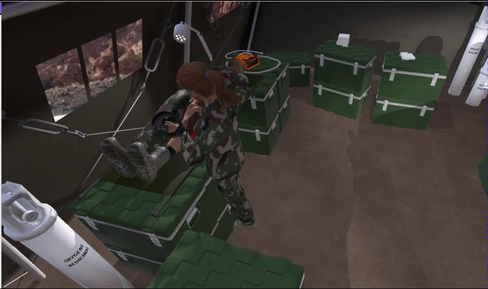

Planification de situations critiques pour la formation en environnements virtuels incertains
My thesis has been done in the context of the in the context of the VICTEAMS project (Virtual Characters for Team Training: Emotional, Adaptive, Motivated and Social). This project aims at creating a VE for training rescue team leaders, improving their Non-Technical Skills (e.g. situation awareness, leadership, decision-making). The operational context is the rescuing of victims in time of war or after a terrorist attack. In this environment, the user plays the role of a medical leader and the virtual characters implement the team members.
This project involes more than 20 collaborators. More specifically, my thesis focuses on generating scenarios using planning techniques. Planning scenarios is crucial to learn in VEs. Indeed, it allows to orchestrate personalized training and to bring the learner toward pedagogical situations. I splitted my work into thoeritcal and applicative aspect. The thoeritcal part involves researches on new planning techniques that handle specific constraints proper to our applicative context. The applicative part consisted in deploying these new planning techniques to generate real scenarios in the context of the VICTEAMS project.
Résumé de ma thèse : Nos travaux s'inscrivent dans le cadre de la formation à des situations socio-techniques complexes en environnement virtuel (EV). La planification joue un rôle essentiel pour l’apprentissage humain en EV. Cela permet à la fois de proposer et d'orchestrer des situations d'apprentissage personnalisées et également d'amener l’apprenant vers des scénarios pertinents du point de vue de l'apprentissage. Les environnements virtuels ouvrent des possibilités énormes en terme de variété des situations car il est plus facile et moins coûteux de mettre en place un nouveau scénario et d'adapter l'EV en conséquence plutôt que lors des formations de terrain. C'est parfois également moins dangereux. Toutefois, pour profiter pleinement de cette capacité, il faut être capable de créer et proposer les scénarios pédagogiques qui animeront ces EVs. Ce travail d’écriture est conséquent et constitue ce qu’on appelle l’authoring bottleneck, c'est-à-dire qu'il devient vite impossible d’écrire tous les scénarios face à l'explosion combinatoire que cela représente. Il est donc nécessaire de mettre en place des systèmes de scénarisation génériques, capables de créer des situations adaptables, sans avoir à définir explicitement l’intégralité des scénarios possibles. Nous faisons le choix que les personnages virtuels peuplant l'EV soient autonomes à la fois pour garantir des comportements explicables, et pour qu'ils soient pourvus d'émotions et d'une personnalité. Ainsi, ce qui rend la scénarisation difficile sont les incertitudes engendrées à la fois par la liberté d'action de l'apprenant qui évolue librement dans l'EV et également par les personnages virtuels autonomes qui ne sont pas directement contrôlables par le module de scénarisation. Dans ce contexte complexe, nous proposons d'accompagner la planification par l'utilisation de Fuzzy Cognitive Map (FCM), permettant ainsi de faciliter l’émergence de scénarios pertinents et pédagogiques. En effet, l’émergence de scénarios ne garantit pas la pertinence de ceux-ci, c'est pourquoi nous utilisons des FCMs pour représenter des situations d’intérêts pédagogiques, qui sont ensuite injectées dans le système de planification afin de garantir la réalisation de ses situations.
Theoretical works
- Solving probabilistic planning problems over-constrained by limited risk
- Planning with fuzzy preconditions
Applicative works
- Planning with events